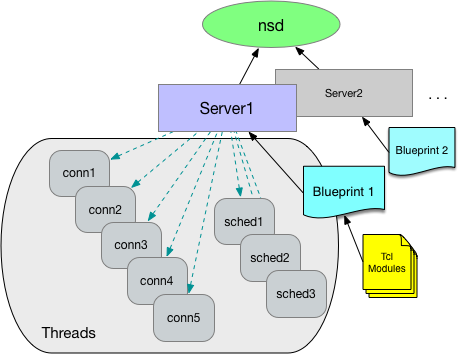

tcl-overview - NaviServer Tcl Overview
This chapter contains general information about using Tcl whether you are using the ADP approach or the Tcl Libraries approach, both of which use the same features of Tcl.
Tcl is a programming system developed by John Ousterhout at the University of California, Berkeley. According to Dr. Ousterhout:
Tcl is a simple scripting language for controlling and extending applications; its name stands for "tool command language". Tcl provides generic programming facilities, such as variables and loops and procedures, that are useful in a variety of applications. Furthermore, Tcl is embeddable. Its interpreter is a library of C procedures that can easily be incorporated into applications, and each application can extend the core Tcl features with additional commands for that application.
NaviServer supports the Tcl 8.* commands. When you write NaviServer extensions in Tcl, you use the core functionality of Tcl as well as a set of NaviServer-specific Tcl functions. For example, there is a NaviServer Tcl function called ns_conn that allows your Tcl script to obtain information about the current connection. In addition, functions are available for returning results to Web clients, accessing databases, and managing the permissions (access control) system.
This book describes the two different methods for extending NaviServer with Tcl, using NaviServer Dynamic Pages (Chapter 2) and Tcl libraries (see Chapter 3), plus general information on using Tcl with either method (see Chapter 4). It also provides a reference for NaviServer's Tcl API (see Chapter 5).
For more information on the Tcl language, we recommend the following sources:
Practical Programming in Tcl and Tk, by Brent B. Welch (Prentice Hall PTR, 1995)
Tcl and the Tk Toolkit, by John K. Ousterhout (Addison-Wesley, 1994)
For the complete manual pages for the Tcl v7.6 commands, visit the web site http://www.scriptics.com/man.
Philip Greenspun's web site, http://www-swiss.ai.mit.edu/wtr/dead-trees/, which includes chapters from his book, Database Backed Web Sites, The Thinking Person's Guide to Web Publishing, and numerous examples of NaviServer Tcl database applications.
The web site: http://www.yahoo.com/Computers_and_Internet/Programming_Languages/Tcl_Tk
You can extend NaviServer using Tcl, C, or CGI. However, using Tcl has the following advantages:
Creating new Tcl scripts is very easy. You can embed Tcl scripts directly into HTML pages using NaviServer Dynamic Pages (ADPs), or you can create .tcl files and register them to handle URLs or URL hierarchies.
Tcl's scripting language is easier to learn and use than compiled programming languages. It provides general programming capabilities, such as variables, loops, and procedures, but it doesn't require strong type definitions or compilation. Plus, NaviServer's Tcl interface provides a complete set of Tcl extensions specifically oriented towards web server applications, such as returning content to the client, accessing form data, accessing databases, and logging.
Many of the basic NaviServer services are implemented as Tcl scripts. In fact, most of the database operations such as handling database inserts, queries, and updates, are written as Tcl scripts. Not only has the Tcl interface greatly reduced the development time for the NaviServer engineering team, it also allows you to easily modify the basic database operations by simply editing the Tcl scripts that implement the functionality.
The Tcl and C interfaces typically provide better performance than CGI. However, if you have existing CGI programs, you may want to use NaviServer's CGI interfaces to take advantage of previously-existing code.
The C interface for NaviServer is described in the NaviServer C Developer's Guide, and the CGI interface is described in the NaviServer Administrator's Guide.
There are two ways to extend NaviServer using Tcl, and each is better-suited to different situations:
NaviServer Dynamic Pages (ADPs): ADPs allow you to embed Tcl scripts directly into HTML pages. The script(s) are interpreted dynamically when the page is accessed. ADPs are ideal in situations where you want to generate all or part of a specific page dynamically. You can re-use code by storing Tcl scripts in Tcl libraries and invoking them from within multiple ADPs. You can also include files and parse other ADPs from within your ADPs.
Tcl Libraries: The alternative to embedding Tcl scripts in HTML pages using ADPs, is to store Tcl scripts in Tcl libraries. You can define scripts that can be called from ADPs, schedule procedures to run at certain times, register scripts to handle specific URLs or URL hierarchies, register scripts to handle all URLs with a specific file extension, and register filters to be run in addition to a URL's registered procedure.
During NaviServer initialization, only one interpreter exists. While modules are loaded and initialized, they may add procedures to the interpreter. When initialization is complete (all modules are loaded and all Tcl libraries have been executed), NaviServer creates from this a blueprint consisting of the preloaded modules (mostly Tcl files). This blueprint is provided later to every thread (e.g. connection threads, or background threads) upon initialization.

Figure: NaviServer Blueprint (per server)
Blueprints are used to reduce latency. When e.g. a connection thread processes an incoming request, all the basic Tcl code is already available and can be used by the interpreter without further loading operations.
In order to update the blueprints, NaviServer provides built-in support for updating via the command ns_eval or via the lower level command ns_ictl.
The NaviServer blueprint contains Tcl functions, XOTcl/NX classes and objects and also namespaced variables. This are all Tcl variables, which are not in the topmost namespace "::". The top-level variables are treated as "scratch variables", which are flushed automatically after every request. The global variables are often used for providing values for templating; cleaning these automatically can avoid unexpected interactions.
In addition of the per-interpreter variables, NaviServer provides shared variables, which can be accessed via the nsv_* interface (see below for an example). When such a variable is altered, its value is immediately available in all threads.
To share variables between the interpreters in a group, use the Tcl nsv_* command.
For example:
#init time:
nsv_set . sharedFile [open myfile.dat]
You must manually close the shared file (by performing a close) when it is no longer needed or when the server is shut down.
Note that there is no implicit locking between interpreters. As a consequence one interpreter can be performing a gets command on the shared file at the same time another interpreter performs a close on the same file. The results are unpredictable, and could potentially cause a core dump. To avoid this situation, use a mutex to protect access to the file whenever it is accessed.
For example:, at initialization time (for example, in your init.tcl script), open a shared file and create a mutex:
nsv_set . sharedLock [ns_mutex create]
nsv_set . sharedFile [open myfile.dat]
At run time, use the mutex to protect any actions you perform on the shared file:
ns_mutex lock [nsv_get . sharedLock]
set sharedFile [nsv_get . sharedFile]
puts $sharedFile ...
gets $sharedFile ...
ns_mutex unlock [nsv_get . sharedLock]
At shutdown (for example, in your shutdown procedure registered with ns_atshutdown), close the file and destroy the lock:
close [nsv_get . sharedFile]
ns_mutex destroy [nsv_get . sharedLock]
An NaviServer operation procedure often manipulates sets of key-value pairs of string data, for example:
rows of data from the database
HTTP header information
HTML form data
In the NaviServer C API these data are manipulated using the ns_set data structure. In the Tcl API the ns_set command can be used to manipulate underlying ns_set data structures that are generated by the NaviServer communications layer or the database services module.
The example below shows a typical use of the ns_set Tcl command to manipulate ns_set structures.
# Example 2: Show header data
#
# Things to notice:
# * The same function is registered for two different URLs
# with different context.
#
# * The headers are pulled out of the conn using the
# ns_conn function.
#
# * The value for a particular header line is extracted
# with "ns_set iget" (case insensitive get).
ns_register_proc GET /showbrowser showheader User-Agent
ns_register_proc GET /showhost showheader Host
proc showheader {key} {
set value [ns_set iget [ns_conn headers] $key]
ns_return 200 text/plain "$key: $value"
}
The following example script implements a simple request procedure which returns 'Hello World'.
# Example 1: Hello World
#
# This simple operation just returns a plain text message.
#
# Things to notice:
#
# * ns_register_proc takes as arguments:
# * the HTTP method
# * the URL that the procedure handles
# * the procedure that is executed
#
# * ns_return takes as arguments:
# * the passed in connection
# * a return status, in this case 200 for success
# * a MIME type
# * the actual string to return
#
# * ns_return properly formats the HTTP response for you.
ns_register_proc GET /example/hello hello
proc hello {} {
ns_return 200 text/plain "Hello World"
}
The following example script shows how to access the HTTP headers sent by the client within a Tcl script.
# Example 2: Show header data
#
# Things to notice:
#
# * The same function is registered for two different URLs
# with different context.
#
# * The headers are pulled out of the conn using the
# ns_conn function.
#
# * The value for a particular header line is extracted
# with "ns_set iget", the case insensitive counterpart to
# "ns_set get".
ns_register_proc GET /showbrowser showheader User-Agent
ns_register_proc GET /showhost showheader Host
proc showheader {key} {
set value [ns_set iget [ns_conn headers] $key]
ns_return 200 text/plain "$key: $value"
}
The following example script provides two request procedures. The first procedure returns an HTML page for collecting a few fields of data from the user. The second procedure utilizes the data to generate a short story.
# Example 3a: Form generation and handling
#
# Two functions are registered. One generates and
# returns an HTML form, and the other processes
# the data in the form.
#
# Things to notice:
#
# * Different functions are registered to the same
# URL with different methods. Note that some browsers
# do not cache results properly when you do this.
#
# * The genstory function returns an error status
# (500) if the client doesn't pass in any form data.
#
# * Form data is stored in an ns_set, and accessed
# like any other set (e.g., header data).
#
# * A counter is used to loop through all the key
# value pairs in the form.
ns_register_proc GET /example/genstory genstoryform
ns_register_proc POST /example/genstory genstory
proc genstoryform {} {
ns_return 200 text/html \
"<html>
<head>
<title>Automatic Story Generator</title>
</head>
<body>
<h1>Automatic Story Generator</h1>
<form action='genstory' method='POST'>
Noun: <input type='text' name='noun1'><br>
Noun: <input type='text' name='noun2'><br>
Name: <input type='text' name='name1'><br>
Name: <input type='text' name='name2'><br>
Adjective: <input type='text' name='adjective1'><br>
Adjective: <input type='text' name='adjective2'><br>
Verb: <input type='text' name='verb1'><br>
Verb: <input type='text' name='verb2'><br>
<p><input type='submit' value='Generate'>
</form>
</body></html>
"}
proc genstory {} {
set formdata [ns_conn form]
if {$formdata eq ""} {
ns_return 200 text/plain "Need form data!"
return
}
# Build up a human-readable representation of the form data.
set hrformdata "<dl>"
set size [ns_set size $formdata]
for {set i 0} {$i < $size} {incr i} {
append hrformdata "<dt>[ns_set key $formdata $i]</dt><dd>[ns_set value $formdata $i]</dd>"
}
append hrformdata "</dl>"
ns_return 200 text/html \
"<html>
<head>
<title>The story of [ns_set get $formdata name1] and
[ns_set get $formdata name2]</title>
</head>
<body>
<h1>The story of [ns_set get $formdata name1] and [ns_set get $formdata name2]</h1>
<p>Once upon a time [ns_set get $formdata name1] and
[ns_set get $formdata name2] went for a
walk in the woods looking for a [ns_set get $formdata noun1].
[ns_set get $formdata name1] was
feeling [ns_set get $formdata adjective1] because
[ns_set get $formdata name2] was so
[ns_set get $formdata adjective2]. So
[ns_set get $formdata name1] decided to
[ns_set get $formdata verb1] [ns_set get $formdata name2]
with a [ns_set get $formdata noun2]. This made
[ns_set get $formdata name2] [ns_set get $formdata verb2]
[ns_set get $formdata name1].
<p><center>The End</center>
The form data that made this possible:<br>
$hrformdata
</body></html>"
}
The following example script implements the same story generating function of genstory (the previous example) but is implemented as a Tcl page instead of a library Tcl function. Save the following snippet as genstory.tcl as well as the associated HTML file genstory.html under the pages directory.
# Example 3b: Form generation and handling
#
# This operation generates a story based on the
# form data submitted from the form genstory.html.
#
# Things to notice:
#
# * This file should be stored with the HTML pages
# of the server. When a client requests the URL corresponding
# to the file, the NaviServer sets the "conn" variable and
# evaluates the Tcl.
#
# * An error status (500) is returned if the client doesn't
# doesn't pass in any form data.
#
# * Form data is stored in an ns_set, and accessed
# like any other set (e.g., header data).
#
# * A counter is used to loop through all the key
# value pairs in the form.
set formdata [ns_conn form]
if {$formdata eq ""} {
ns_return 200 text/plain "Need form data!"
return
}
# Build up a human-readable representation of the form data.
set hrformdata "<dl>"
set size [ns_set size $formdata]
for {set i 0} {$i < $size} {incr i} {
append hrformdata "<dt>[ns_set key $formdata $i]</dt>\
<dd>[ns_set value $formdata $i]</dd>"
}
append hrformdata "</dl>"
ns_return 200 text/html \
"<html>
<head>
<title>The story of [ns_set get $formdata name1] and
[ns_set get $formdata name2]</title>
</head>
<body>
<h1>The story of [ns_set get $formdata name1] and
[ns_set get $formdata name2]</h1>
<p>Once upon a time [ns_set get $formdata name1] and
[ns_set get $formdata name2] went for a
walk in the woods looking for a [ns_set get $formdata noun1].
[ns_set get $formdata name1] was
feeling [ns_set get $formdata adjective1] because
[ns_set get $formdata name2] was so
[ns_set get $formdata adjective2]. So
[ns_set get $formdata name1] decided to
[ns_set get $formdata verb1] [ns_set get $formdata name2]
with a [ns_set get $formdata noun2]. This made
[ns_set get $formdata name2] [ns_set get $formdata verb2]
[ns_set get $formdata name1].
<p><center>The End</center>
The form data that made this possible:<br>
$hrformdata
</body></html>"
Here's the associated HTML file genstory.html:
<html> <head> <title>Automatic Story Generator</title> </head> <body> <h1>Automatic Story Generator</h1> <form action='genstory.tcl' method='POST'> Noun: <input type='text' name='noun1'><br> Noun: <input type='text' name='noun2'><br> Name: <input type='text' name='name1'><br> Name: <input type='text' name='name2'><br> Adjective: <input type='text' name='adjective1'><br> Adjective: <input type='text' name='adjective2'><br> Verb: <input type='text' name='verb1'><br> Verb: <input type='text' name='verb2'><br> <p><input type='submit' value='Generate'> </form> </body> </html>
The following example script shows how to use a NaviServer simple response command (in this case, ns_returnredirect) and the equivalent code when sending raw data to the client.
# Example 4: Implementing redirects with ns_respond and
# ns_write
#
# /example/not_here uses ns_respond to return an HTTP
# redirect to /example/finaldest.
# /example/not_here2 does the same thing using ns_write
# /example/not_here3 does the same thing with
# ns_returnredirect
#
# Things to notice:
#
# * When you use ns_write, you need to compose the
# entire response.
#
# * "ns_conn location" returns the http://hostname
# part of the URL that you can use to generate
# fully qualified URLs.
#
# * ns_returnredirect is a lot simpler than either
# ns_respond or ns_write.
ns_register_proc GET /example/not_here not_here
ns_register_proc GET /example/not_here2 not_here2
ns_register_proc GET /example/not_here3 not_here3
ns_register_proc GET /example/finaldest finaldest
proc not_here {} {
set headers [ns_set new myheaders]
ns_set put $headers Location \
[ns_conn location]/example/finaldest
ns_respond -status 302 -type text/plain \
-string "Redirection" -headers $headers
}
proc not_here2 {} {
set content \
"<html><head><title>Redirection</title></head><body>
<h1>Redirection</h1>The actual location of what you were looking for is
<a href='[ns_conn location]/example/finaldest'> here.</a>
</body></html>"
ns_write \
"HTTP/1.0 302 Document follows
MIME-Version: 1.0
Content-Type: text/html
Content-Length: [string length $content]
Location: [ns_conn location]/example/finaldest
$content"
}
proc not_here3 {} {
ns_returnredirect [ns_conn location]/example/finaldest
}
proc finaldest {} {
ns_return 200 text/plain \
"You have arrived at the final destination."
}
The following example script provides a request procedure which describes the columns of a database table using the NaviServer "ns_tableinfo" command .
# Example 5: Describing a database table
#
# /example/describetable prints out a column-by-column
# description of a database table. The database
# pool name and table name are specified at the end
# of the URL -- e.g.,
#
# /example/describetable/nsdbpool/ns_users
#
# Note: You must have the nsdb module loaded into your virtual
# server for this example to work.
#
# Things to notice:
#
# * ns_returnbadrequest returns a nicely formatted message
# telling the client they submitted an invalid request.
#
# * "ns_conn urlv" returns a Tcl array whose elements are the
# slash-delimited parts of the URL.
#
# * The describetable function loops through all the columns
# and uses "ns_column valuebyindex" to get the type of each
# one.
#
# * ns_returnnotice nicely formats the return value.
ns_register_proc GET /example/describetable describetable
proc describetable {} {
if {[ns_conn urlc] != 4} {
return [ns_returnbadrequest "Missing table name and/or poolname"]
}
set pool [lindex [ns_conn urlv] 2]
if {$pool ni [ns_db pools]} {
return [ns_returnbadrequest "Pool $pool does not exist"]
}
set db [ns_db gethandle $pool]
set table [lindex [ns_conn urlv] 3]
if {[info command ns_table] eq ""} {
set output "Driver [ns_db driver $db] does not support command ns_table"
} else {
set tinfo [ns_table info $db $table]
if {$tinfo eq ""} {
return [ns_returnbadrequest "Table $table does not exist"]
}
set output "<dl>"
set size [ns_column count $tinfo]
for {set i 0} {$i < $size} {incr i} {
append output "<dt>[ns_column name $tinfo $i] \
<dd>[ns_column typebyindex $tinfo $i]</dd>"
}
append output "</dl><hr>"
}
ns_returnnotice 200 "Table $table in pool $pool" $output
}
The following example script shows how to query a table in the database.
# Example 6: Getting data from the database
#
# /example/getemps queries a database in the default
# pool and returns a list of all the employees listed
# in the employees table. It assumes a table called
# employees exists with the column emp_name.
#
# Note: You must have the nsdb module loaded into your virtual
# server for this example to work.
#
# Things to notice:
#
# * Use "ns_db gethandle" to get a handle for the database
# from the default database pool of the virtual server.
#
# * Use "ns_db select" to query the database and
# "ns_db getrow" to retrieve data.
#
# * Rows are returned as ns_sets.
#
ns_register_proc GET /example/getemps getemps
proc getemps {} {
set ul "<ul>"
set db [ns_db gethandle [ns_config [ns_dbconfigpath] "DefaultPool"]]
set row [ns_db select $db "select emp_name from employees order by emp_name;"]
while { [ns_db getrow $db $row] } {
append ul "<li>[ns_set get $row emp_name] \n"
}
append ul "</ul>"
ns_returnnotice 200 "Employee list" $ul
}
The following example script is a simple emulation of the WebSite WinCGI interface. Notice that this is just a demo, since the NaviServer modules nscgi provides a much simpler way to interface via CGI (when this is necessary).
#
# Example 7: simple emulation of the WebSite WinCGI interface
#
# This Tcl script emulates the WinCGI interface of the WebSite server.
# To use, move this file to your Tcl library directory (normally the
# modules/tcl directory of the NaviServer directory), set the
# following nsd.ini variables in the [ns\server\<server-name>\wincgi]
# section, and restart the server.
#
# key default description
# --- ------- -----------
# prefix /cgi-win URL prefix for WinCGI.
# debug off Set to on to keep temp files for debugging.
# gmtoff 0 Minutes West of GMT for the "GMT Offset" variable.
# dir c:\wincgi Directory of WinCGI programs.
#
#
# Note: This script is unsupported and not a complete emulation of the
# WebSite WinCGI interface. In particular, not all the WinCGI variables
# are set. Full support for WinCGI will be incorporated into the nscgi
# module in a future NaviServer release.
#
#
# Fetch the variables from the configuration file.
#
global WinCGI
set WinCGI(section) "ns\\server\\[ns_info server]\\wincgi"
if {[set WinCGI(prefix) [ns_config $WinCGI(section) prefix]] eq ""} {
set WinCGI(prefix) /cgi-win
}
if {[set WinCGI(dir) [ns_config $WinCGI(section) dir]] eq ""} {
set WinCGI(dir) [ns_info home]/$WinCGI(prefix)
}
if {[set WinCGI(gmtoff) [ns_config $WinCGI(section) gmtoff]] eq ""} {
set WinCGI(gmtoff) 0
}
if {[set WinCGI(debug) [ns_config -bool $WinCGI(section) debug]] eq ""} {
set WinCGI(debug) 0
}
#
# Register the win-cgi procedure to handle requests for WinCGI executables.
#
ns_register_proc POST $WinCGI(prefix)/*.exe win-cgi
ns_register_proc GET $WinCGI(prefix)/*.exe win-cgi
#
# win-cgi - The Tcl request procedure which emulates WinCGI.
#
proc win-cgi {} {
global WinCGI
# The program is the second part of the WinCGI URL.
set args [join [split [ns_conn query] &]]
set pgm [lindex [ns_conn urlv] 1]
regsub -all {\+} $args " " args
foreach e [split $WinCGI(dir)/$pgm /] {
if {$e ne ""} {lappend exec $e}
}
set exec [join $exec ]
if ![file executable $exec] {
return [ns_returnnotfound]
}
# WinCGI requires a few temporary files.
set ini [ns_mktemp]
set inp [ns_mktemp]
set out [ns_mktemp]
# Copy the request content to the input file.
set fp [open $inp w]
ns_writecontent $fp
set len [tell $fp]
close $fp
# Create the WinCGI variables .ini file.
set fp [open $ini w]
puts $fp {[CGI]}
puts $fp \
"Request Protocol=HTTP/1.0
Request Method=[ns_conn method]
Executable Path=$WinCGI(prefix)/$pgm
Server Software=[ns_info name]/[ns_info version]
Server Name=[ns_info name]
Server Port=[ns_info version]
Server Admin=[ns_config NaviServer WebMaster]
CGI Version=CGI/1.2 (Win)
Remote Address=[ns_conn peeraddr]
Authentication Method=Basic
Authentication Realm=[ns_conn location]
Content Type=application/x-www-form-urlencoded
Content Length=$len"
puts $fp ""
puts $fp {[System]}
puts $fp \
"GMT Offset=$WinCGI(gmtoff)
Debug Mode=Yes
Output File=$out
Content File=$inp"
# Set any POST or query form variables.
puts $fp ""
puts $fp {[Form Literal]}
set form [ns_conn form]
if {$form ne ""} {
for {set i 0} {$i < [ns_set size $form]} {incr i} {
set key [ns_set key $form $i]
set value [ns_set value $form $i]
puts $fp "$key=$value"
}
}
# Set the accept headers and accumulate the extra headers.
puts $fp ""
puts $fp {[Accept]}
set headers [ns_conn headers]
set extras ""
for {set i 0} {$i < [ns_set size $headers]} {incr i} {
set key [ns_set key $headers $i]
set ukey [string toupper $key]
set value [ns_set value $headers $i]
if {$ukey eq "ACCEPT"} {
puts $fp "$value=Yes"
} elseif {$key ne "CONTENT-LENGTH" && $key ne "CONTENT-TYPE"} {
append extras "$key=$value\n"
}
}
puts $fp ""
puts $fp {[Extra Headers]}
puts $fp $extras
close $fp
# Execute the WinCGI program.
# NB: "catch" the exec and open because a WinCGI
# program can be misbehaved, returning a nonzero
# exit status or not creating the output file.
catch {exec "$exec $ini $inp $out $args"}
if [catch {set fp [open $out]}] {
ns_returnerror 500 "WinCGI exec failed"
} else {
set type text/html
set status 200
while {[gets $fp line] > 0} {
set line [string trim $line]
if {$line eq ""} break
set head [split $line :]
set key [string tolower [string trim [lindex $head 0]]]
set value [string trim [lindex $head 1]]
if {$key eq "content-type"} {
set type $value
} elseif {$key eq "location"} {
set location $value
} elseif {$key eq "status"} {
set status $status
}
}
set page [read $fp]
close $fp
if [info exists location] {
ns_returnredirect $location
} else {
ns_return $status $type $page
}
}
if $WinCGI(debug) {
ns_log Notice "CGI $pgm: ini: $ini, inp: $inp, out: $out"
} else {
file delete -- $ini
file delete -- $inp
file delete -- $out
}
}